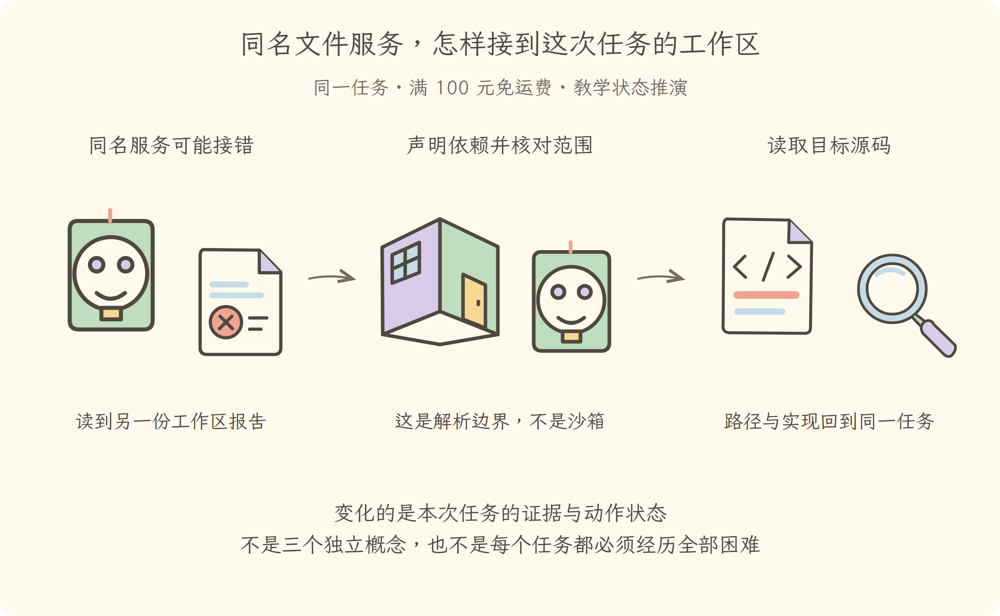

学习导航
第14讲 · 同名文件服务，怎样接到这次任务的工作区
源码基线：cd5ef8148158c3a752a658978873241fdf8e2bbc。业务案例为虚构 Java 运费服务；图与流程是教学推演，源码事实另有固定证据。
从这里接上
旧资源已清理，但新工具不能误连旧服务。本讲要回答：同名文件服务，怎样接到这次任务的工作区？
上一讲解决了“资源随安装清理，不留下旧后端的重复工作”；这仍不能代替本讲要补的责任。
阅读与完成标准
先看逐步讲解，再做练习。视觉课件用于复习，词典随用随查，不要求先背英文。预计正文阅读 20–35 分钟，练习 10–20 分钟；这是安排建议，不是学会的证明。
读完应能解释：文件服务定义、本地实现、文件工具分别做什么？ 还要能预测：服务可见范围隔离了，文件访问就绝对安全了吗？ 最后从源码证据定位相应责任。
现在必须懂的是本讲怎样改变证据或动作状态；具体框架中的其他选项知道存在即可，不用一次读完整个包。语法卡住可查补课 A、补课 B，工程定位查补课 C，看完返回此处即可。
本讲交接
通过定义、提供者、消费者和可见范围定位接线。但下一步还要解决：记录员、审批者和执行者，谁必须等待谁。
← 第13讲：插件生命周期 · 第15讲：事件协作 →
视觉课件
第14讲 · 同名文件服务，怎样接到这次任务的工作区
源码基线：cd5ef8148158c3a752a658978873241fdf8e2bbc。业务案例为虚构 Java 运费服务；图与流程是教学推演，源码事实另有固定证据。
当前现场
旧资源已清理，但新工具不能误连旧服务。固定业务约定不变：满 10000 分免运费；原实现在等于时返回 800。禁止用修改预期的方式让测试变绿。

三分钟复述
先描述左格缺什么，再说明中格采取的机制，最后指出右格新增了哪些证据或责任。通过定义、提供者、消费者和可见范围定位接线。不要只读图上的物件名；删掉中间这项机制，任务会在哪一步失去依据？
本讲最容易误会的是：服务可见范围隔离了，文件访问就绝对安全了吗？ 没有。范围解决名字解析到谁，不自动限制操作系统访问；安全需要执行策略和沙箱。
从图返回源码
图只表达教学关联与状态变化，不代替完整调用顺序。源码定位提供实现或契约证据，正文解释映射和边界。
← 第13讲：插件生命周期 · 第15讲：事件协作 →
逐步讲解
第14讲 · 同名文件服务，怎样接到这次任务的工作区
源码基线：cd5ef8148158c3a752a658978873241fdf8e2bbc。业务案例为虚构 Java 运费服务；图与流程是教学推演，源码事实另有固定证据。
一、同一运费任务遇到的下一道障碍
第十三讲已清理旧报告监视器。现在装上新文件服务后，工具仍可能查到错误范围里的实现。运费任务的代码在甲工作区，旧报告在乙工作区；同样叫文件服务，必须明确本次使用者实际接到谁。这里解决名字解析与依赖激活，不把这层范围当作操作系统安全隔离。
三格为同一运费任务的教学状态变化或故障对照。图不是实际运行日志；关键区别见各格说明。
二、沿文件能力核对三种角色
先看 文件能力定义。它扩展插件上下文的类型，声明文件服务名称及方法契约。声明回答“能够请求哪些操作”，并没有自己完成磁盘读取。
再看 本地实现。它继承定义，通过基类接入服务注册。最后看 文件工具入口，其中声明需要工具服务、文件服务和系统提示服务。
于是同一份失败报告的读取可以分成职责：模型提出读文件请求；文件工具使用文件能力；当前可见的提供者执行具体操作。配置另一个兼容实现时，使用者的业务代码不必逐处改成新类名，但参数约定、能力支持与生命周期仍须满足。
三、服务注册为何也要能撤销
提供者不是把对象永远丢进全局字典。服务构造函数 接到 服务注册实现，记录服务名、对象和提供它的安装实例，同时登记撤销注册的清理动作。
这样才接上第十三讲的资源责任：提供者卸载时，服务也从对应可见范围撤下。否则旧设备已经拆掉，通讯录却还把它列为可用，使用者可能继续拿到失效对象。
但使用者可能比提供者更早登记。它不能只查一次“现在有没有”然后永远不管，这就需要依赖声明。
四、依赖注入首先是一把启动联锁
inject（声明并等待依赖）不是简单把对象塞进某个参数。它把“这次安装必须看见哪些服务”写进生命周期条件：
- 少了必需服务，插件主体不能凭空开工。
- 必需服务可用后，才进入加载过程。
- 依赖实现消失或变更时，旧资源需要清理，再在满足条件时加载。
依赖回调入口 把依赖回调组织为一个小插件，因此它也有清理与重载责任，不是一次性的字典查询。
联想到报告监视器：若文件服务还没准备好，就不要启动依赖它的定时任务；若文件实现换了，也不能让旧定时任务偷偷保留旧对象。这正是“接线问题”为什么会改变“资源生命周期”。
五、看起来像属性读取，为何可能报错
插件代码写 ctx.fs，表面上像取对象字段，实际服务访问会经过 resolver（服务解析器）。解析实现 会结合当前安装的依赖声明和可见范围查找对象。
如果把必需依赖漏掉，某些受控读取会报告未声明依赖。这个错误在提醒你：程序必须把依赖关系表达出来，框架才能管理等待和重载。不能只为了消除报错，把所有读取改成可选查询。
ctx.get('name') 是显式可选查询，可能没有结果。它适合“没有这个能力也能走合理分支”的情形。若任务本来就必须读文件，可选查询不能替代“缺文件服务就不能启动”的声明。
六、两个房间都叫文件服务，怎么避免串线
即使名字和契约正确，当前环境仍可能有不止一个实现。scope（服务可见范围）决定这个名字在当前位置通向谁，像两个房间各有自己的插座。
服务解析隔离 为子上下文中指定的服务建立独立隔离标记。查找时使用对应标记区分服务存储，于是甲房间与乙房间可以同名而不通向同一个提供者。
这里的墙不是安全边界。它不会阻止一个文件实现访问操作系统磁盘，也不会把同一进程变成两个容器。它解决的是“名字解析到谁”，沙箱与权限解决的则是“这个实现被允许做什么”。
七、把接线关系放回测试排查
文件工具拿不到服务，先查契约名称与依赖声明，再查当前范围里有没有提供者；提供者更换后行为异常，继续查旧安装的资源是否已清理；如果担心越权，则要去执行策略与沙箱边界，不能拿作用域隔离当作安全证明。
现在可以读懂第一讲里“连接工具与文件能力”的具体一部分了。不过，一个任务还会让界面、记录者和提问处理者一起参与。它们该全部等待，还是找到一个回答就停？第十五讲沿这个问题进入事件协作。
带着实际状态进入下一讲
通过定义、提供者、消费者和可见范围定位接线。服务已经接对，报告观察者和审批者却不能用同一种等待方式。第十五讲继续拆开协作契约。
← 第13讲：插件生命周期 · 第15讲：事件协作 →
练习与答案
第14讲 · 同名文件服务，怎样接到这次任务的工作区
源码基线：cd5ef8148158c3a752a658978873241fdf8e2bbc。业务案例为虚构 Java 运费服务；图与流程是教学推演，源码事实另有固定证据。
先作答，再展开
1. 解释机制
文件服务定义、本地实现、文件工具分别做什么？
查看解释与边界
定义约定契约，提供者实现访问，工具作为消费者使用能力；三者合起来才构成完整能力接口。
2. 预测反例
服务可见范围隔离了，文件访问就绝对安全了吗？
查看推演
没有。范围解决名字解析到谁，不自动限制操作系统访问；安全需要执行策略和沙箱。
3. 源码与图相互校验
打开本讲定位，找到正文强调的分支或契约。遮住图中文字，解释左、中、右三格分别表示什么；指出图省略了哪一项实现细节。
参考核对方式
图的顺序是：同名服务可能接错（读到另一份工作区报告）→声明依赖并核对范围（这是解析边界，不是沙箱）→读取目标源码（路径与实现回到同一任务）。
依次核对文件能力定义、本地提供者注册和文件工具依赖声明，再查隔离标记参与的服务解析。图阻止把甲任务接到乙服务，不代表操作系统阻止访问乙目录。
← 第13讲：插件生命周期 · 第15讲：事件协作 →
分享稿
第14讲 · 同名文件服务，怎样接到这次任务的工作区
源码基线：cd5ef8148158c3a752a658978873241fdf8e2bbc。业务案例为虚构 Java 运费服务；图与流程是教学推演，源码事实另有固定证据。
用自己的话讲给同事
我们还在查同一个 Java 运费问题：满 100 元应免运费，恰好边界却收了 8 元。走到本讲，已有条件是：旧资源已清理，但新工具不能误连旧服务。
如果不补这一层，会遇到的问题是：文件服务定义、本地实现、文件工具分别做什么？ 定义约定契约，提供者实现访问，工具作为消费者使用能力；三者合起来才构成完整能力接口。 所以本讲新增的不是要背的名词，而是任务中一项明确的责任。
现在能做到：通过定义、提供者、消费者和可见范围定位接线。但还要守住反例：服务可见范围隔离了，文件访问就绝对安全了吗？ 没有。范围解决名字解析到谁，不自动限制操作系统访问；安全需要执行策略和沙箱。
请结合本讲图说出变化，再指向源码；不要宣称这段教学推演就是实际模型日志。下一讲顺着“记录员、审批者和执行者，谁必须等待谁”继续。
术语词典
第14讲 · 同名文件服务，怎样接到这次任务的工作区
源码基线：cd5ef8148158c3a752a658978873241fdf8e2bbc。业务案例为虚构 Java 运费服务；图与流程是教学推演，源码事实另有固定证据。
词典用于回查，正文在首次使用处解释。代码、参数与路径保留原拼写；产品名称不逐字翻译。模型上下文和插件上下文不是一回事。
inject（声明并等待依赖）
声明安装依赖哪些服务，并把其可用性接入生命周期，像开工前的供电联锁。并非仅把对象塞进参数；依赖变更可能引起清理与重载。
resolver（服务解析器）
按照服务名、当前上下文和依赖规则寻找实现的解析器，像查当前工位的通讯录。查找可能失败；改用可选查询不能替代真正的必需依赖。
scope（服务可见范围）
服务名在当前上下文中的可见范围，像两个房间各有同名插座。它解决接到哪个实现，不提供进程或磁盘安全隔离。
核对来源
本讲源码定位与完整正文。本例报告和金额属于教学夹具，不来自这份上游源码。